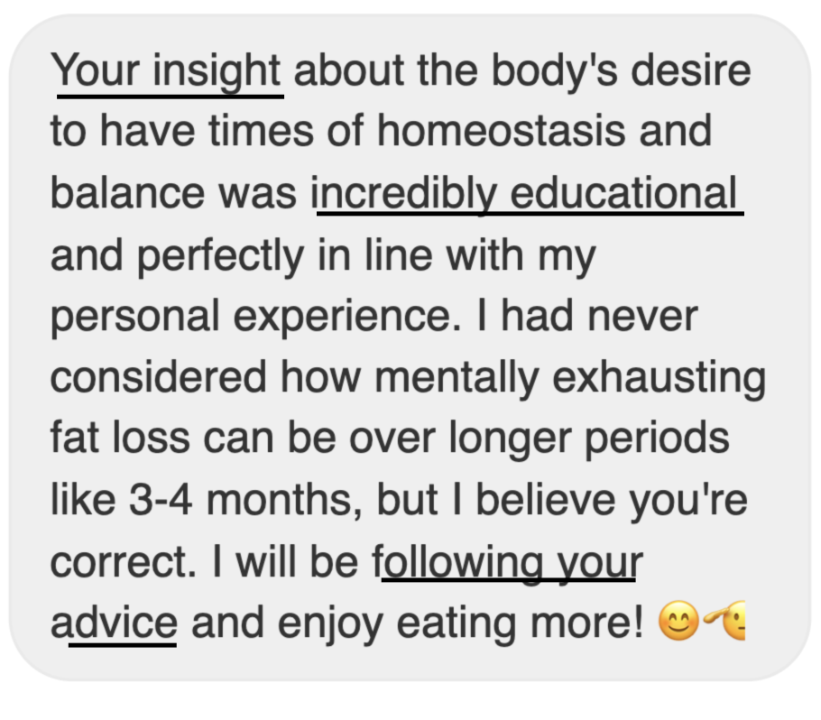
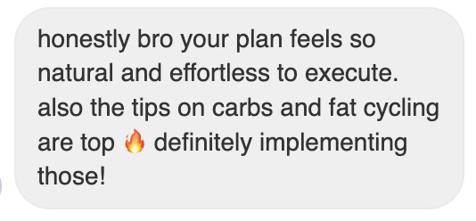
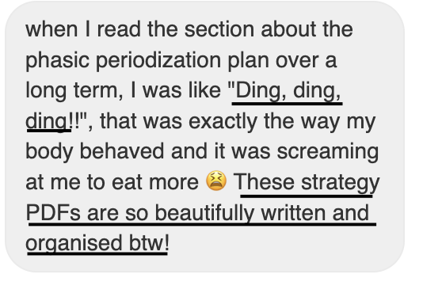

Rahul Ramaka
rahul.1.ramaka@
ucl.ac.uk
kcl.ac.uk
cam.ac.uk
 |
Hi there, I'm Rahul! (…æ…ëÀê.…¶ äl)
I'm a computer science graduate student living in London, UK.
I'm interested in systems programming, algorithm design and combinatorial analysis. |
|---|
2023 - 2024

Took a strategic break from corporate desk roles to focus on personal development and diversify my skill set. During this time, I:
 I will link this plan here soon for free. Please e-mail me if you're interested!
I will link this plan here soon for free. Please e-mail me if you're interested!
- Improved my physical and mental well-being by joining a CrossFit hybrid training gym.
- Gained expertise in sports science and nutritional science through self-study and experimentation.
- Leveraged this new skillset to launch an independent private fitness consulting service.
- Expanded my client base through networking and social media marketing.



2023 - 2023
Joined the Programming, Logic, and Semantics research group at the University of Cambridge as a Research Intern to contribute to ESPRC+Arm-backed project called DIADEM.
Experimented in creating embeddable tools for the LLVM compiler kit to improve coverage metrics for debugging metadata.
My work extended my final-year undergraduate project called liballocs-gc. I was supervised by Dr Stephen Kell.
My work extended my final-year undergraduate project called liballocs-gc. I was supervised by Dr Stephen Kell.
2022 - 2023
Back to Amazon. This time, I interned with AWS DevOpsGuru and led Project CommonArchs which helped identify and prioritise support for common AWS user operational patterns using unsupervised graph clustering.
Check out my final presentation slides.
Check out my final presentation slides.
2021 - 2022
I was an Undergraduate Teaching Assistant (TA) for two second-year modules:
- Practical Experiences of C/C++ Programming
- Operating Systems & Concurrency (Head TA)
2021 - 2021
In summer 2021, I interned with the Video Quality Analysis (VQA) group in PV to create a low-latency, multi-viewing livestream player with real-time notifications of A/V defects such as blocky frames, AV-sync errors, and audio noise detected using computer vision models trained on PV captured content and synthetic media.
2020 - 2020
In summer 2020, I interned at Snap Engineering to build cross-platform mobile messaging across Android and iOS. More specifically, I worked on writing the cross-language interface between the platform-specific presentation code and the backend C++ libraries.

Education
2019 - 2022
BSc Computer Science at King's College London
üéì Awarded a First Class degree.
üèÜ Springer Nature Prize (distinguished performance in second year studies.)
Read more about my experience here.
üéì Awarded a First Class degree.
üèÜ Springer Nature Prize (distinguished performance in second year studies.)
Read more about my experience here.
2016 - 2018
A Levels (top grade): 4 A*s in Maths, Biology, Physics and Chemistry
üèÖ Gold Scholar Badge and Excellence Scholarship (S$6500)
üèÖ Gold Scholar Badge and Excellence Scholarship (S$6500)
Projects
| libdeep | a PyTorch-like deep learning library in C++/Python |
|---|---|
| lightdb | a lightweight disk-oriented relational database in C++ |
| netstackxx | rewriting the Linux networking protocol stack in C++ |
| mrgo | a MapReduce implementation in Golang |
| common-archs | clustering AWS Cloudformation graphs |
| liballocsgc | a semi-precise C/C++ garbage collector extension for liballocs |
| funlang | an LLVM backed FUN compiler in Scala |